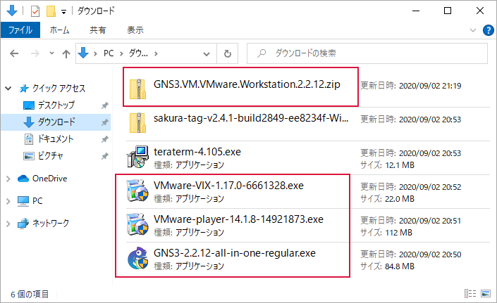
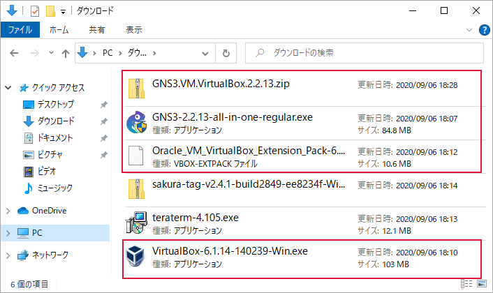
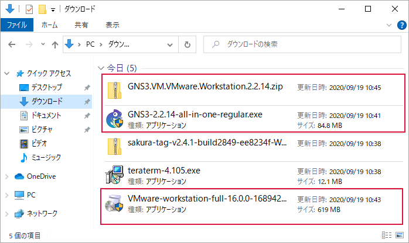

環境構築¶
Windows 10 上に GNS3 の実行環境を構築します。
VMware Workstation Player で環境構築するときの注意¶
VMware Workstation Player と VMware VIX の組み合わせは「 GNS3 Setup wizard with the GNS3 VM 」内の「 VMware Workstation vs. Player 」によると次のとおりです。
VMware Workstation 14 Player + VMware VIX 1.17
VMware Workstation 12 Player + VMware VIX 1.15 （以降のバージョン）
現行バージョンである VMware Workstation 15 Player に対応する VMware VIX はリリースされていません。そのため VMware Workstation 15 Player 上で GNS3 を動作させる方法はフォーラム「 GNS3 with Workstation Player 15.5 」で議論中なので本ドキュメントでは取り扱いません。なお、 VMware Workstation 15 Pro は VMware VIX を内蔵しているので、 VMware VIX のインストールなしで環境構築ができます。
本ドキュメントで VMware を使用する場合は下記の組み合わせで環境を構築します。
VMware Workstation 14 Player + VMware VIX 1.17
インストールするアプリケーション¶
インストールするアプリケーションの一覧です。一部のアプリケーションのダウンロードにアカウントが必要です。アカウントは無料で作成できます。
Note
VMware と Oracle VirtualBox で GNS3 のバージョンが異なるのは、異なる日にダウンロードしたためです。 Oracle VirtualBox 用をダウンロードしたとき、少しだけバージョンが上がっていました。
共通¶
VMware / Oracle VM VirtualBox のどちらの環境で使用するアプリケーションです。これらは環境構築に着手する前にインストールします。
アプリケーション名 |
ファイル名 |
備考 |
teraterm-4.105.exe |
ターミナルソフト |
|
sakura-tag-v2.4.1-build2849-ee8234f-Win32-Release-Installer.zip |
テキストエディタ（使い慣れたもので良い） |
VMware Workstation Player 編¶
アプリケーション名 |
ファイル名 |
備考 |
GNS3-2.2.12-all-in-one-regular.exe |
Windows |
|
GNS3.VM.VMware.Workstation.2.2.12.zip |
VMware Workstation and Fusion |
|
VMware-player-14.1.8-14921873.exe |
Windows 64-bit Operating Systems |
|
VMware-VIX-1.17.0-6661328.exe |
Windows 64-bit Operating Systems |
環境構築は赤枠で囲んだものを使用します。
Oracle VM VirtualBox 編¶
アプリケーション名 |
ファイル名 |
備考 |
GNS3-2.2.13-all-in-one-regular.exe |
Windows |
|
GNS3.VM.VirtualBox.2.2.13.zip |
VirtualBox |
|
VirtualBox-6.1.14-140239-Win.exe |
Windows hosts |
|
Oracle_VM_VirtualBox_Extension_Pack-6.1.14.vbox-extpack |
All supported platforms |
環境構築は赤枠で囲んだものを使用します。
VMware Workstation Pro 編¶
アプリケーション名 |
ファイル名 |
備考 |
GNS3-2.2.14-all-in-one-regular.exe |
Windows |
|
GNS3.VM.VMware.Workstation.2.2.14.zip |
VMware Workstation and Fusion |
|
VMware-workstation-full-16.0.0-16894299.exe |
試用版 |
環境構築は赤枠で囲んだものを使用します。
